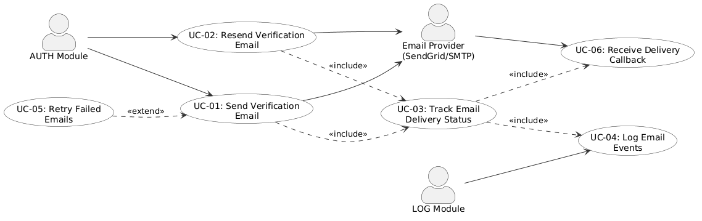
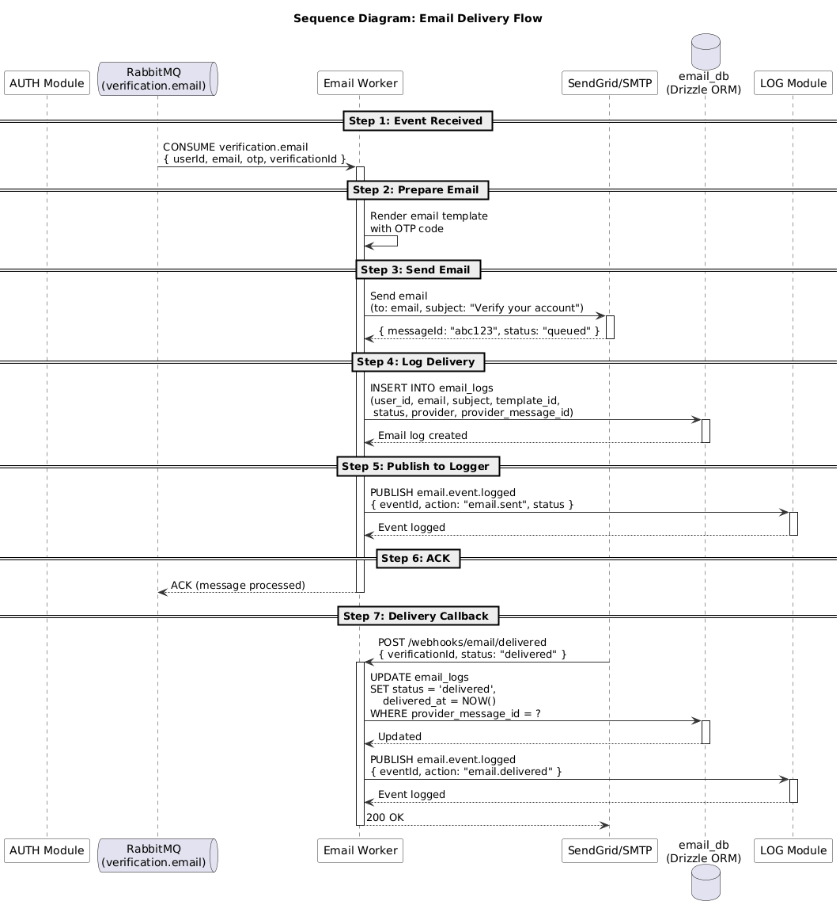

| Version | 1.0 |
| System | Authentication System |
| Module | EMAIL - Email Notification |
| Database | email_db |
| Date | 2026-07-24 |
| Author | Nam Nguyen |
| Status | Draft |
This document defines the software requirements for the Email Notification module of the Authentication System.
Email notification delivery, templating, and audit trail
None - This module is independent.
| Term | Definition |
|---|---|
| SRS | Software Requirements Specification |
| FR | Functional Requirement |
| NFR | Non-Functional Requirement |
| UC | Use Case |
| DR | Data Requirement |
| IR | Integration Requirement |
| Aspect | Value |
|---|---|
| Module Code | |
| Module Name | Email Notification |
| Description | Email notification delivery, templating, and audit trail |
| Database | email_db |
| Tables | email_logs |
| Tech Stack | NestJS, Drizzle ORM, PostgreSQL, RabbitMQ, SendGrid/SMTP |

| Req ID | Module | Requirement | Use Case | Priority | Description |
|---|---|---|---|---|---|
| FR-001 | Send Verification Email | UC-01 | High | System shall send verification emails with OTP codes to users | |
| FR-002 | Resend Verification Email | UC-01 | High | System shall allow resending verification emails with rate limiting | |
| FR-003 | Track Email Delivery | UC-02 | Medium | System shall track email delivery status (sent, delivered, failed) | |
| FR-004 | Log Email Events | UC-02 | Medium | System shall log all email events for audit trail | |
| FR-005 | Retry Failed Emails | UC-03 | Medium | System shall retry failed email deliveries with exponential backoff |
| Aspect | Description |
|---|---|
| Actor | AUTH module (via RabbitMQ) |
| Preconditions | User has requested email verification; RabbitMQ queue verification.email is available |
| Main Flow | 1. AUTH module publishes verification.email.requested event 2. Email Consumer receives event from queue 3. System validates email address format 4. System creates email log record (status: pending) 5. System sends email via SendGrid/SMTP provider 6. System updates log (status: sent, sent_at) 7. Provider sends delivery confirmation webhook 8. System updates log (status: delivered, delivered_at) |
| Alternative Flows | 3a. Invalid email → System logs error, returns to queue 5a. Provider fails → System updates log (status: failed, error_message) 5b. Retry up to 3 times with exponential backoff (1min, 5min, 15min) 8a. Delivery failed → System updates log with error_message |
| Postconditions | Email sent; log record updated with delivery status; AUTH notified via webhook |
| Related FR | FR-001, FR-002 |
| Aspect | Description |
|---|---|
| Actor | Email provider (SendGrid/SMTP), Admin user |
| Preconditions | Email has been sent via provider |
| Main Flow | 1. Provider sends delivery status callback to /api/webhooks/email/delivered 2. System receives webhook with verification_id and status 3. System validates webhook signature (HMAC-SHA256) 4. System finds email log by verification_id 5. System updates log with delivery status and delivered_at timestamp 6. System sends verification.email.delivered event back to AUTH module 7. System publishes email.event.logged to LOG module |
| Alternative Flows | 3a. Invalid signature → System returns 401 EMAIL_005 4a. Log not found → System returns 404 5a. Delivery failed → System updates log with error_message |
| Postconditions | Email log updated with final delivery status; AUTH and LOG notified |
| Related FR | FR-003, FR-004 |
| Aspect | Description |
|---|---|
| Actor | Internal scheduler |
| Preconditions | Failed email logs exist with retry_count < 3 |
| Main Flow | 1. Scheduler runs every 5 minutes 2. System queries email_logs for failed status with retry_count < 3 3. For each failed email, System increments retry_count 4. System re-queues email to RabbitMQ 5. Consumer processes retry with exponential backoff delay 6. System updates log with new status |
| Alternative Flows | 5a. Retry succeeds → System updates log (status: sent/delivered) 5b. Max retries reached (3) → System marks as permanently failed |
| Postconditions | Failed emails retried; permanently failed emails marked for review |
| Related FR | FR-005 |

| Req ID | Entity | Description | Related FR |
|---|---|---|---|
| DR-001 | email_logs | Stores email delivery logs including recipient, subject, status, and provider details | FR-001, FR-003, FR-004 |
| Method | Path | Description | Requirement IDs |
|---|---|---|---|
| POST | /api/webhooks/email/delivered | Receive email delivery status callback | FR-003 |

| Event | Direction | Protocol | Description |
|---|---|---|---|
| verification.email.requested | AUTH → EMAIL | RabbitMQ | Triggered when user requests email verification |
| verification.email.resent | AUTH → EMAIL | RabbitMQ | Triggered when user resends email verification |
| verification.email.delivered | EMAIL → AUTH | Webhook | Confirms email delivery status back to AUTH |
| email.event.logged | EMAIL → LOG | RabbitMQ | Logs email delivery events to Logger |
| Req ID | Category | Requirement | Target |
|---|---|---|---|
| NFR-001 | Performance | Email delivery latency | < 3 seconds for 95th percentile |
| NFR-002 | Availability | Email service uptime | 99.9% availability |
| NFR-003 | Scalability | Email throughput | 1000+ emails per minute |
| NFR-004 | Reliability | Email delivery rate | 99%+ delivery success rate |
| Req ID | Requirement | TDS Section | DB Table | API Endpoint |
|---|---|---|---|---|
| FR-001 | Send Verification Email | 3.1 Email Sending | email_logs | RabbitMQ consumer |
| FR-002 | Resend Verification Email | 3.1 Email Sending | email_logs | RabbitMQ consumer |
| FR-003 | Track Email Delivery | 3.2 Delivery Tracking | email_logs | POST /api/webhooks/email/delivered |
| FR-004 | Log Email Events | 3.3 Event Logging | email_logs | RabbitMQ producer |
| FR-005 | Retry Failed Emails | 3.4 Retry Mechanism | email_logs | Internal scheduler |